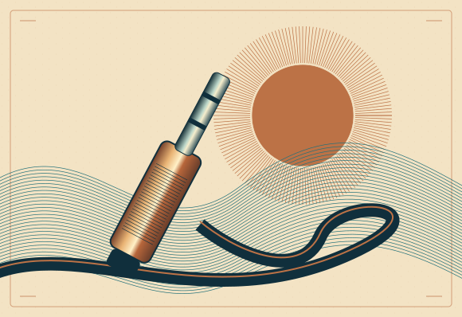
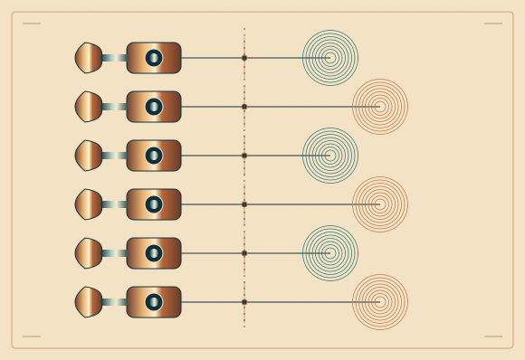
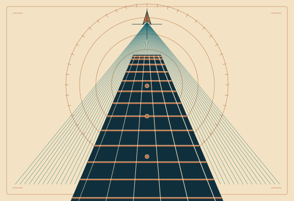
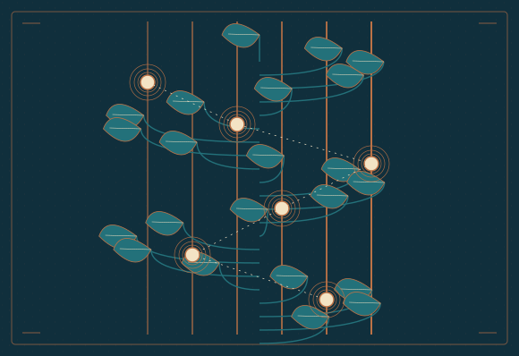
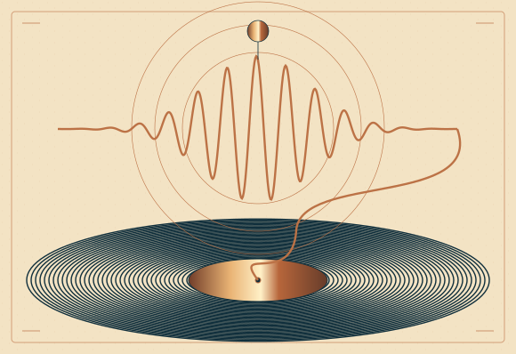

Commune, mais pas ordinaire.
Propositions SVG — gravures musicales, cuivre mat et encre pétrole. Les contrôles des cartes restent inchangés.

La première fait le jackUn objet sculptural, un premier signal solaire et un câble qui guide le regard.
Enchanté, moi c’est…Six mécanismes et leurs signatures sonores : l’accordage devient une collection de voix.
Le manche a un sensUne carte architecturale avec boussole : comprendre l’instrument comme un territoire.
Il y a du monde sous les doigtsUn herbier de positions lumineuses : découvrir les notes, faire pousser ses repères.
Le fil du riffUn seul fil traverse la forme d’onde et rejoint le vinyle : continuité du geste et du phrasé.